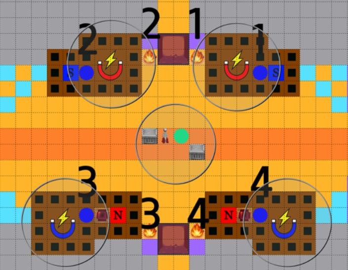
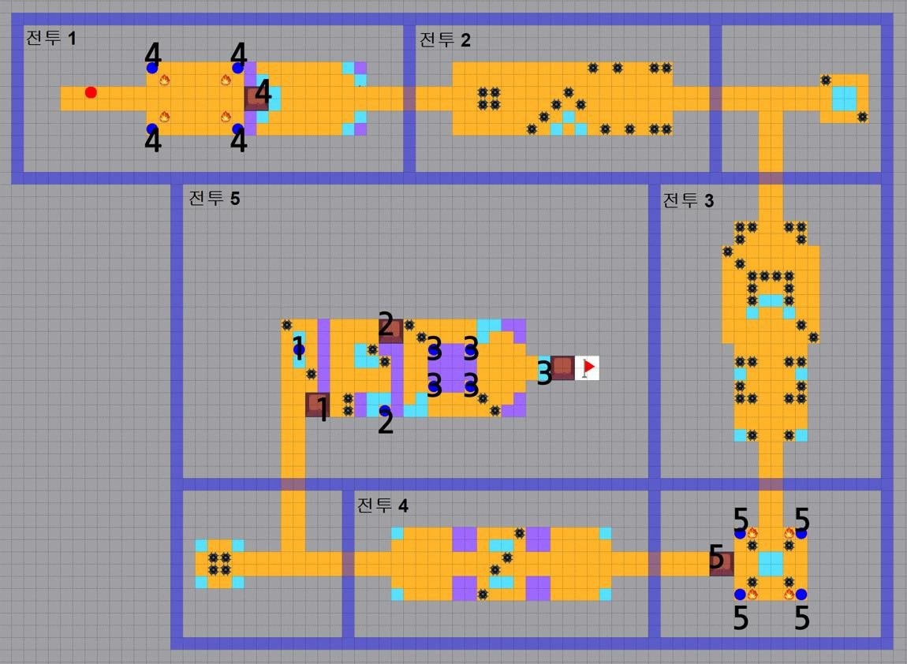

메인 스토리는 전투·퍼즐·이벤트가 섞인 맵이고, 퍼즐을 풀면 추가 보상을 얻습니다. 챕터 전체 테마에 맞춰 퍼즐 종류를 고르고, 스테이지마다 기초 퍼즐을 둬서 계속 학습하게 했습니다. 월드 16은 전기를 내보내는 테슬라 코일, 전기가 통하는 철제 오브젝트, 자성을 띠는 자석으로 구성했습니다.

← 전체 프로젝트
가디언 테일즈 LIVE · Puzzle Level Design
번개의 길 · 빛의 미궁
메인 스토리 월드 16의 자석·전기 퍼즐 스테이지와, 도전 콘텐츠 ‘미궁’ 빛속성 42층입니다.
APPROACH
챕터 테마로 퍼즐 종류를 고른다
1퍼즐 컨셉 아이데이션
2가지 이상 기믹을 교차해 새 구조를 만들고 ‘기초 컨셉’과 ‘목표’를 정합니다.
2흐름과 세부 기획
정보를 단계적으로 보여 주고, 풀이 미션을 작은 단위로 쪼개 푸는 재미를 줍니다.
3난이도 레벨 디자인
코어 기믹으로 난이도를 나눠 [규칙 분석] → [기믹 응용] → [심화 풀이]로 유도합니다.
ROUTE
메인 동선은 짧게, 퍼즐은 서브 경로에
퍼즐은 서브 경로에서 추가 보상을 얻는 구조라, 서브 경로를 도는 유저의 피로도를 낮추는 것이 핵심이었습니다.
최소 전투만으로 깰 수 있는 메인 동선을 먼저 잡고, 서브 경로 입구에 튜토리얼 퍼즐을 둬서 유도했습니다. 퍼즐 공간은 백트래킹이 적은 ‘ㅁ’자 동선으로 묶었습니다.

PUZZLES
튜토리얼 → 기본 → 휴식 → 심화
- 1 · 튜토리얼
자석 & 소코반 - 반드시 지나가는 경로에, 살짝만 건드려도 주변과 반응하는 퍼즐 오브젝트를 배치. 간단한 소코반을 섞어 자석의 특성을 익히게 했습니다. 입구 주변에 보상을 두고, 직전 전투에서는 닿을 수 없는 2층을 보여 줘 서브 루트가 있다는 걸 알렸습니다.
- 2 · 기본 퍼즐
자석 - 1층 자석으로 닿을 수 없는 2층 스위치를 누르는 기믹. 상호작용할 수 있는 건 ‘도넛 자석’ 하나라, 들기만 해도 주변 기믹이 반응해 규칙이 읽힙니다. 함정으로, 철제 오브젝트는 유저뿐 아니라 주변 자석에도 끌려가서 순서를 지키지 않으면 실패합니다.
- 3 · 휴식
길 찾기 - 전투와 퍼즐 사이 환기 구간. 미니맵에 탐색되지 않은 공간과 항아리 화살표로 숨겨진 길을 찾게 하고, 보상을 줬습니다.
- 4 · 심화 퍼즐
거대 자석 - 중앙의 거대 자석이 모든 자성 오브젝트를 끌어당기는 성질을 응용해 맵 곳곳의 스위치를 누릅니다. 한 번에 풀 수 없고, 구간별로 나눠 오브젝트를 배치해야 풀리도록 설계했습니다.


미궁 · 빛속성 42층
정상적으로는 못 깨는 20초 타임어택
‘미궁’은 기본 전투 시스템에 특수 기믹을 더한 전투·퍼즐 도전 콘텐츠입니다. 42층은 20초 안에 목적지에 도착해야 하는데, 그냥 달리면 시간이 모자랍니다.
부술 수 있는 항아리에 시간 확보 기믹을 넣었습니다. 반드시 지나가는 길에 항아리를 둬서 [항아리 파괴 → 시간 확보]를 먼저 익히게 하고, 메인 경로를 벗어난 곳이나 위험한 장애물 사이에 항아리를 놓아 난이도를 조절했습니다.
입장 조건은 캐릭터 1인, 빛속성만입니다. 같은 시기에 출시된 신규 캐릭터 ‘가브리엘’을 타겟으로, 오브젝트를 관통하는 공격과 범위 공격·회복 스킬을 쓰면 난이도가 크게 내려가도록 설계했습니다.


ORIGINAL SLIDES